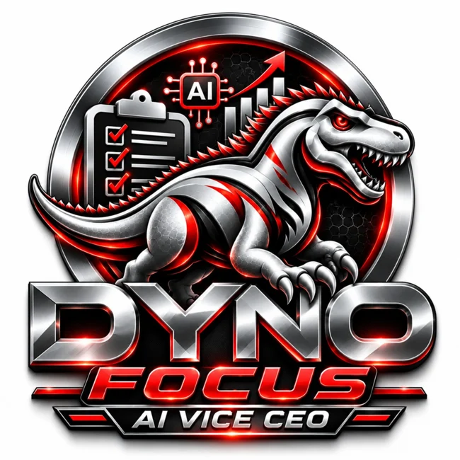

01
PILIHAN UTAMA · PRODUKTIVITI

Dyno Focus
Banyak perkara dalam kepala. Mana perlu disiapkan dahulu?
Sebagai bos, anda mengurus idea, pelanggan, pasukan dan keputusan pada masa yang sama. Dyno Focus berperanan sebagai AI Vice CEO yang membantu menyusun keutamaan, merancang tugasan, menyediakan peringatan dan mengurus susulan. Anda kekal membuat keputusan; pembantu AI membantu memastikan langkah seterusnya lebih jelas.
- Susun keutamaan
- Peringatan tugasan
- Susulan tindakan